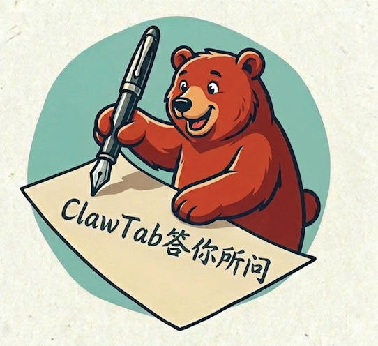

ClawTab reads the page you're on and lets you ask questions, summarize, and follow up — powered by the OpenAI-compatible model of your choice. Multi-session and tool calling included.
The install link will point to the Chrome Web Store once ClawTab is published.
Built for the thoughts and follow-ups that surface while you browse.
Talk to your model without leaving the page you're reading.
Uses Mozilla Readability + NodeHtmlMarkdown to pull the title, URL, and article body, cached per URL.
Bring your own Base URL, API Key, and Model. Nothing routes through us.
Watch answers stream in real time and expand the reasoning trace when your model provides one.
tabSnapshotListBasic lists open tabs and tabSnapshotGet fetches page bodies — results render as Markdown.
Create, switch, and delete independent conversations. History persists in IndexedDB.
Four steps from install to your first page-aware answer.
Install ClawTab from the Chrome Web Store, then click the toolbar icon or open Chrome's side panel.
In the settings panel, fill in an OpenAI-compatible Base URL, API Key, and Model name.
ClawTab automatically extracts the current page's title, URL, and body text as context for the conversation.
Type in the input box or start a new session for an independent thread. Enter sends, Shift+Enter for a newline.
ClawTab does not operate its own cloud model service. Your input, page text, and chat context
are sent to the model endpoint you configure. API keys, model settings, sessions, chat history,
and page snapshots are stored locally in your browser (chrome.storage.local + IndexedDB)
and are not uploaded to any third-party service.